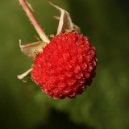

|  | Rubus parviflorus, commonly called thimbleberry, is a species of Rubus native to northern temperate regions of North America. It bears edible red fruit similar in appearance to a raspberry. Because the fruit does not hold together well, it has not been commercially developed for the retail berry market, but is cultivated for landscapes. The plant has large fuzzy leaves and no thorns. Rubus parviflorus is native to western North America from Alaska south as far as California, New Mexico, Chihuahua, and San Luis Potosí. Its range extends east to the Rocky Mountains and discontinuously to the Great Lakes Region. It grows from sea level in the north, up to elevations of 3,000 m (10,000 ft) in the south |